一、前言
摘要:
在本教程中,我们将简短的了解什么是 WSL, WSL 的安装和一些常规的配置, 话不多说,那我们开始吧！
关键词: WSL Windows 10 Bash Ubuntu Linux
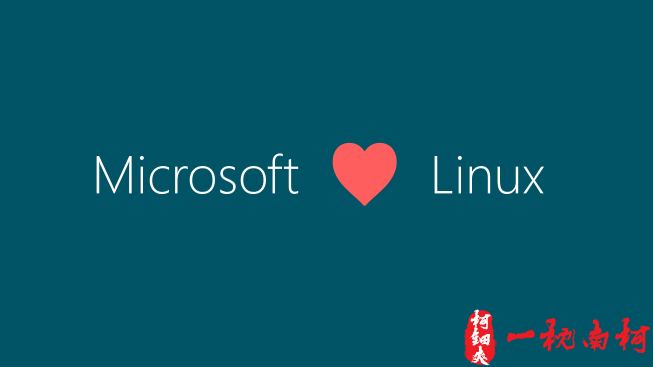
1.什么是 WSL
WSL 即 ”Windows Subsystem for Linux” 的缩写,顾名思义,WSL 就是 Windows 系统下的 Linux 子系统,WSL 作为 Windows 的组件搭载在 Windows 10 周年更新(1607) 之后的系统中.
WSL 刚出来的时候只有 Ubuntu 16 这个发行版可以使用,而现在已经有很多 Linux 子系统发行版供我们使用了.
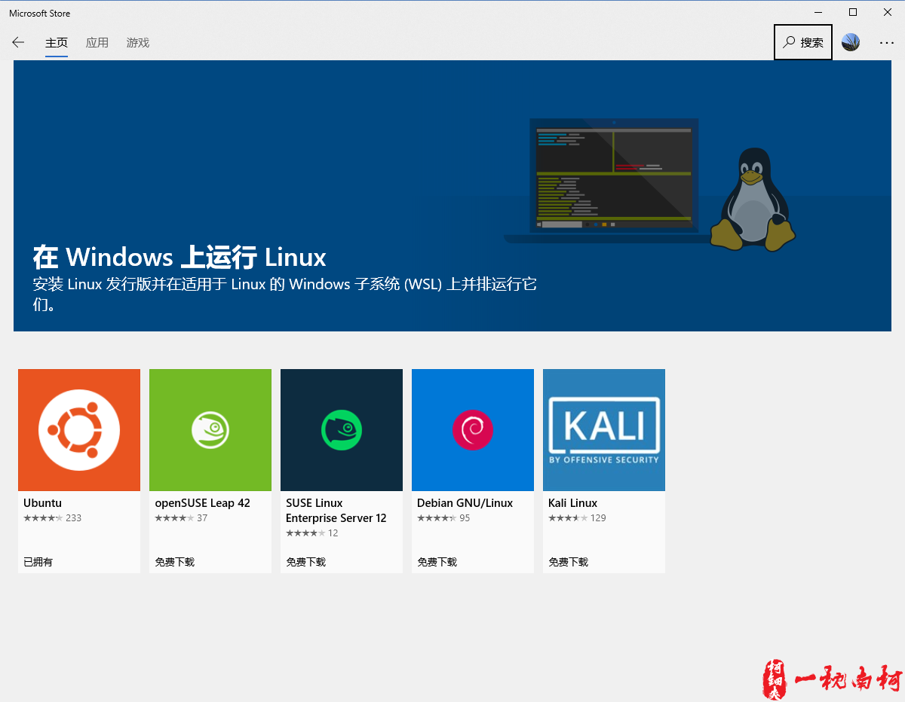
对于许多国内的开发者来说,Windows 才是主要的开发环境,但对于一些想要尝试 Linux 的开发者来说,经常需要因为一些 Windows 独享的开发软件,而不得不在 Windows 和 Linux 之间来回切换,实在麻烦. 现在有了 WSL ,在 Windows 下我们也可以尝试 Linux 的魅力,又可以抛弃难用到恶心的 CMD 了.
2.WSL 能做什么
既然是 Linux 子系统,那便是可以和 Linux 一样,当然由于是 Windows 系统,故一些关于硬件的驱动的相关驱动便没有那么完善,详情请自己 Google.
3.前期准备
- Windows 10 (版本号>1607)
- Microsoft 账号用于登陆 Microsoft Store
- 耐心
二、安装 WSL
1.Windows 10 开启开发者模式 & 打开 Linux 子系统功能
1.设置界面打开开发者模式
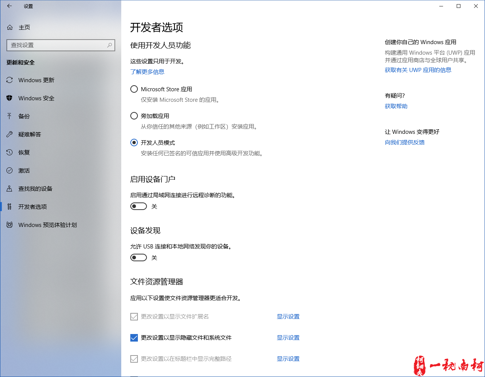
2.程序和功能->启用或关闭 Windows 功能 -> 勾选适用于 Linux 的 Windows 子系统
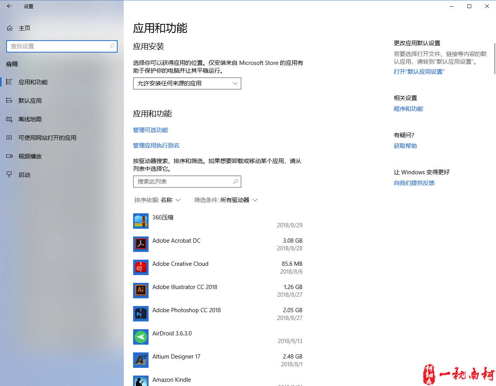 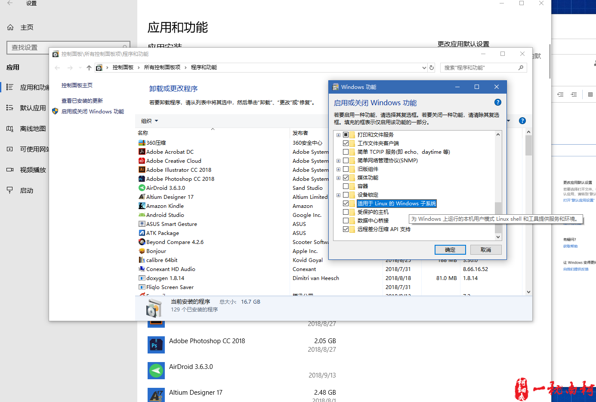
3.重启电脑
2.使用 Microsoft 应用商城 安装 WSL
1.打开并用微软账号登陆 Microsoft Store,搜索安装 Linux 子系统发行版本: Ubuntu (Ubuntu 18)
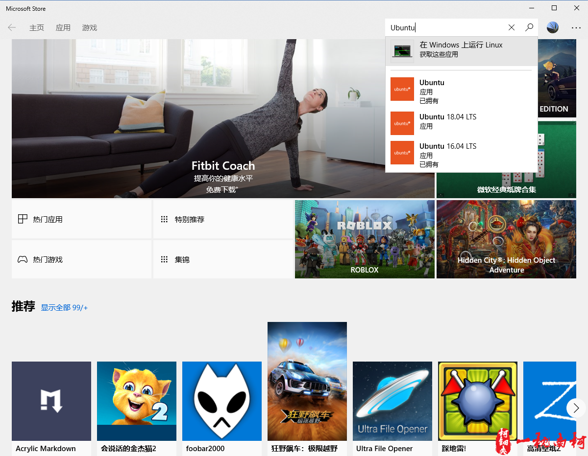

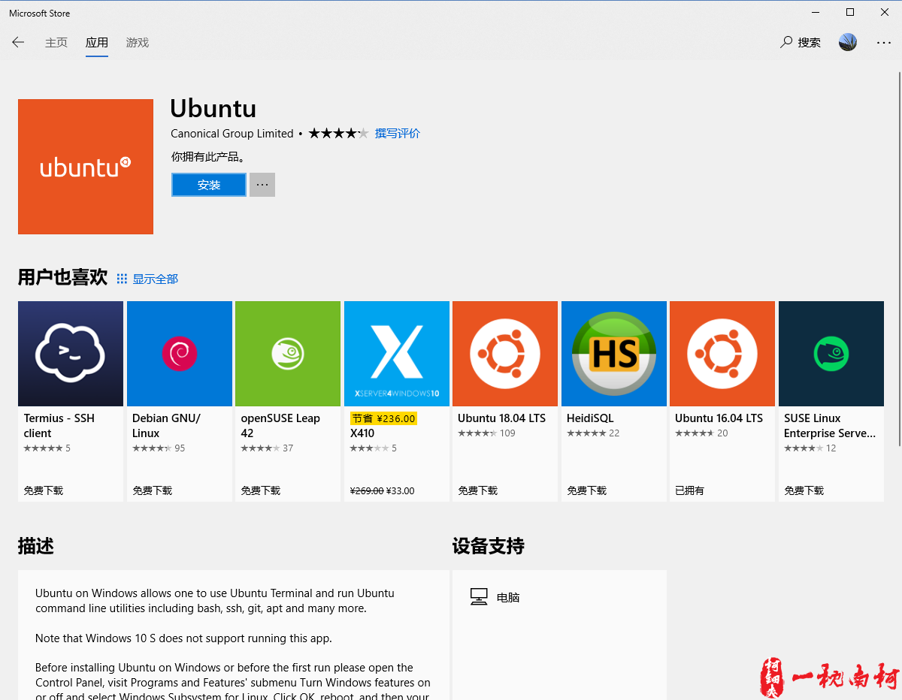
2.启动 WSL,配置 linux 用户账户名称与密码
1.初始化 WSL 需要大概 5 分钟,耐心等待
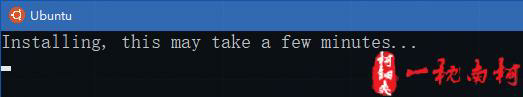
2.输入 Linux 用户 名称&密码（密码输入时不可见,输入两次确认）
三、.对 WSL 进行一些基本配置
1.切换软件源为 阿里源/清华源
1.在 WSL 中输入
**[terminal]
**[command sudo vim /etc/apt/sources.list]
输入:%d,删除所有内容,之后按 i 键进入插入模式,
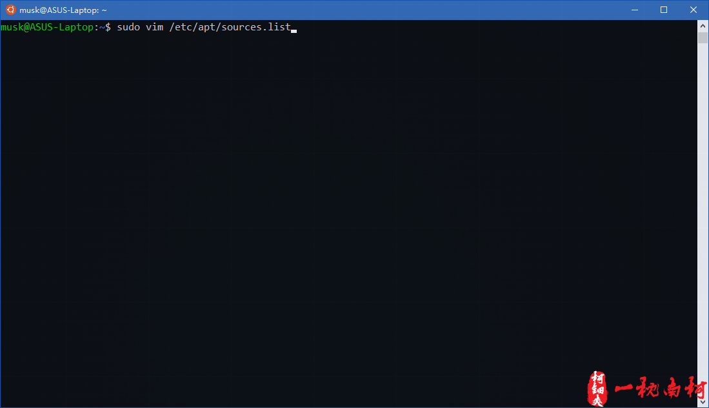
2.打开阿里源（阿里巴巴开源镜像站 https://opsx.alibaba.com/mirror）
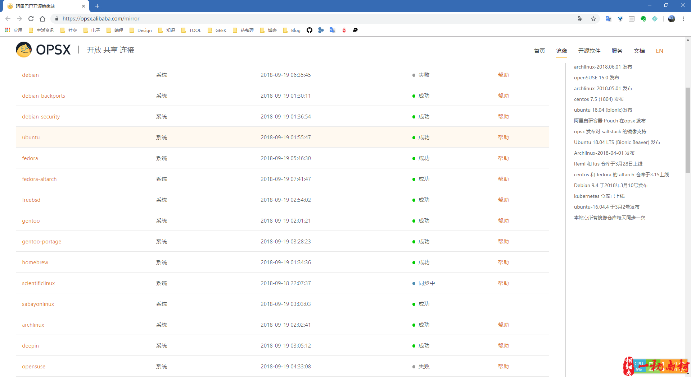
找到 Ubuntu 点击帮助,复制 Ubuntu 18 的配置源,并粘贴到 WSL bash 窗口中
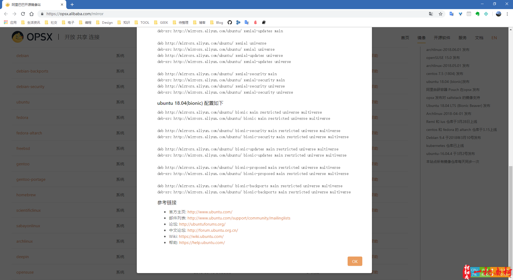
ubuntu 18.04(bionic) 配置源如下
**[terminal]
deb http://mirrors.aliyun.com/ubuntu/ bionic main restricted universe multiverse
deb-src http://mirrors.aliyun.com/ubuntu/ bionic main restricted universe multiverse
deb http://mirrors.aliyun.com/ubuntu/ bionic-security main restricted universe multiverse
deb-src http://mirrors.aliyun.com/ubuntu/ bionic-security main restricted universe multiverse
deb http://mirrors.aliyun.com/ubuntu/ bionic-updates main restricted universe multiverse
deb-src http://mirrors.aliyun.com/ubuntu/ bionic-updates main restricted universe multiverse
deb http://mirrors.aliyun.com/ubuntu/ bionic-proposed main restricted universe multiverse
deb-src http://mirrors.aliyun.com/ubuntu/ bionic-proposed main restricted universe multiverse
deb http://mirrors.aliyun.com/ubuntu/ bionic-backports main restricted universe multiverse
deb-src http://mirrors.aliyun.com/ubuntu/ bionic-backports main restricted universe multiverse
按 ESC 键退出插入模式,输入 :wq 保存并退出
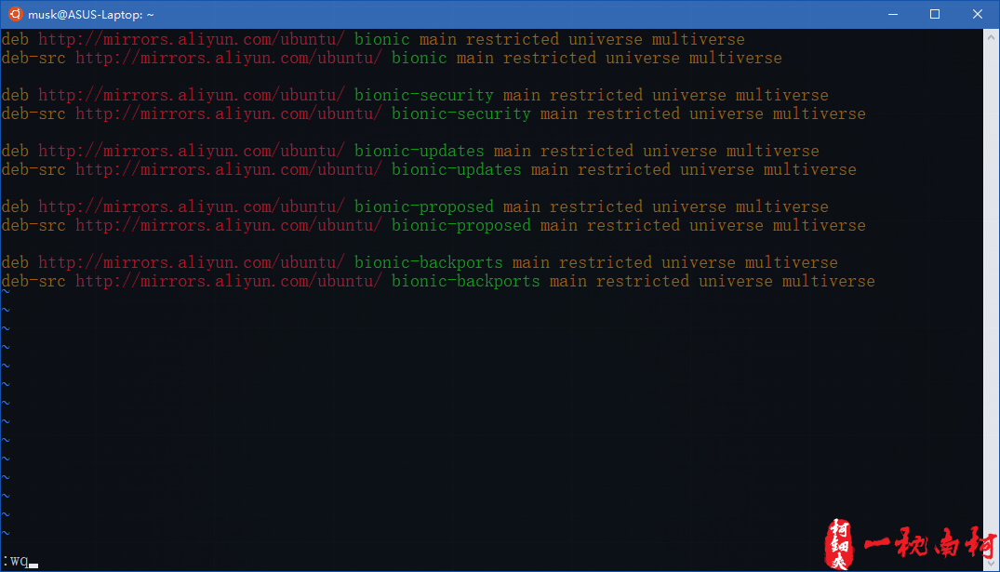
依此输入下面两条命令更新软件
**[terminal]
**[command sudo apt update]
**[command sudo apt upgrade -y]

2.缩短显示路径
当进入某个文件路径的时候,由于Linux终端命令行默认显示文件所在的全部路径,有时过长,看着很不舒服,所以我们可以通过配置,让其仅仅显示当前文件所在目录名称.
配置步骤：
1.修改 .bashrc 文件(用户根目录下) vim 打开 .bashrc 文件,
**[terminal]
**[command vim ~/.bashrc]
找到如下这行（以实际代码所在行为准）：
**[terminal]
PS1='${debian_chroot:+($debian_chroot)}\[\033[01;32m\]\u@\h\[\033[00m\]:\[\033[01;34m\]\W\[\033[00m\]\$ '
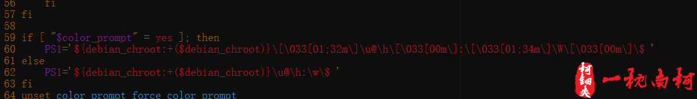
将上面这行代码中的小写 w 改为大写的 W, 保存退出 (wq)
2.在终端下执行 source ~/.bashrc 使其生效
完成上面两步操作之后,重新进入到一个目录,此时在终端下只显示当前文件所在目录名称.
更改前效果：
**[terminal]
**[prompt musk@ASUS-Laptop]**[path /etc/vim]**[delimiter $]
更改后效果：
**[terminal]
**[prompt musk@ASUS-Laptop]**[path vim]**[delimiter $]
3.VIM 编辑器默认显示行号
1.打开 WSL Bash,使用 vim 编辑配置文件
**[terminal]
**[command sudo vim /etc/vim/vimrc]
2.在文件中任意位置添加一行
**[terminal]
**[command set number]
也可缩写成
**[terminal]
**[command set nu]
4. 安装 screefetch 显示系统信息(装X工具)
**[terminal]
**[command sudo apt install screenfetch -y]
四、在 Visual Studio Code 中使用 WSL 做为默认终端
在推荐 WSL 的同时,我要向你推荐一款在微软拥抱开源世界之后推出的 开源、强大、轻量 的全能编辑器 —— VS Code, 来搭配 WSL 作为我们日常开发环境;
那么我们接下来就安装 VSCode 并将 WSL 配置为 VSCode 的默认终端
- 下载安装
VSCode
网页搜索 VSCode, 打开 VSCode 官网, 我们这里选择下载 Windows x64
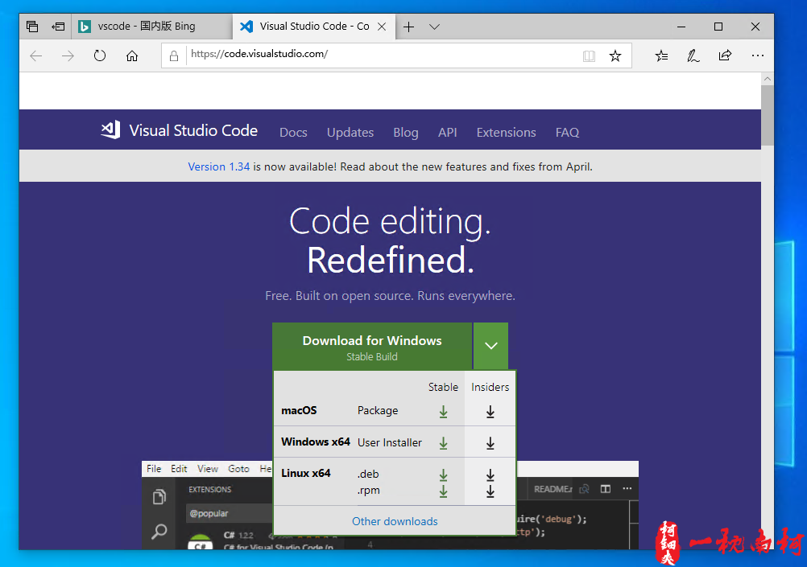
根据安装提示的完成安装即可(具体安装细节请自行 Google)
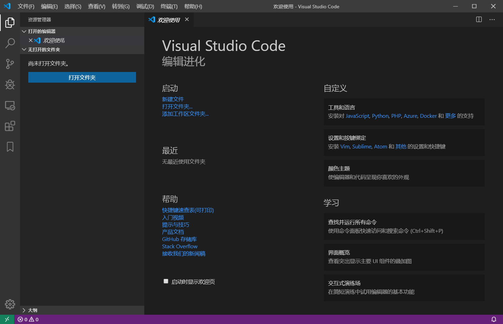
- 将 VS Code 终端配置为
WSL
在 Windows 上 VS Code 默认终端采用的 shell 为 CMD, 我们这里将其切换为 WSL
Ctrl+Shfit+P 打开命令执行栏,输入 shell 选择 WSL,
`Ctrl+`` 即可打开 VS Code 终端窗口.
- 更多
VS Code使用技巧请自行Google